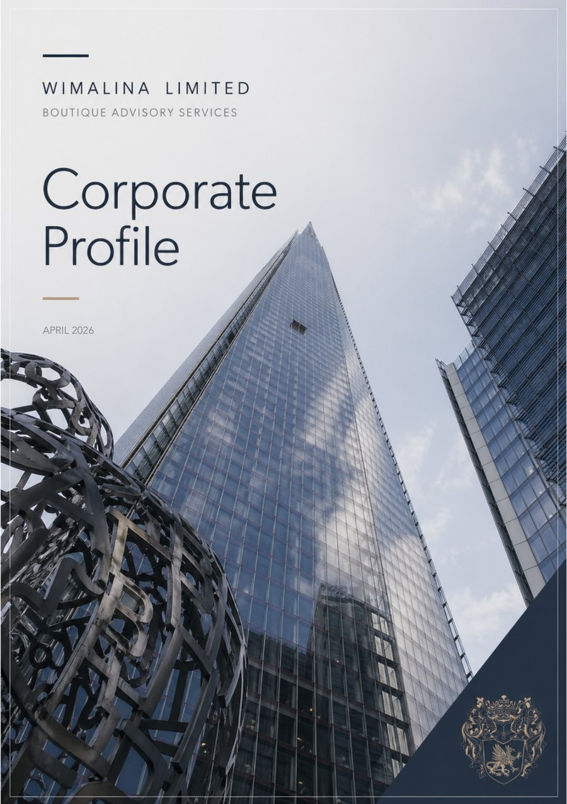

Discretion
Careful stakeholder management and understated handling for sensitive assignments.
Independent. Considered. Confidential.
Discreet corporate finance and strategic advisory for selected mandates where judgement, process and representation matter.
About Wimalina
Wimalina Limited is an independent corporate finance and strategic advisory platform serving selected clients, counterparties and opportunities across the United Kingdom, Continental Europe, the United States and beyond.
Founded in 2018, the firm draws on senior experience across banking, asset management, corporate development, investment-related environments and international business. The advisory model is selective in mandate acceptance, measured in tone and practical in execution.
Our Positioning
Careful stakeholder management and understated handling for sensitive assignments.
Perspective across the United Kingdom, Continental Europe, the United States and beyond.
Structured process support from first discussion through critical execution stages.
Core Areas of Activity
Capital raising, strategic funding concepts, acquisition and divestment support, restructuring and transaction preparation.
Buy-side, sell-side and partnership support across positioning, materials, due diligence, negotiation and closing preparation.
Principal-level sparring on commercial direction, financing options, growth pathways, stakeholder settings and timing-sensitive opportunities.
Assignments involving heightened complexity, unusual stakeholder constellations, confidential settings or cross-border sensitivities.
Workstream oversight, timing discipline, adviser and counterparty coordination, and continuity through key execution stages.
Corporate Finance Approach
Wimalina supports selected clients in capital raising, strategic funding concepts, M&A support, restructuring, balance-sheet related initiatives and wider transaction preparation.

Who We Work With
"In an environment where many speak loudly, we prefer to be useful."